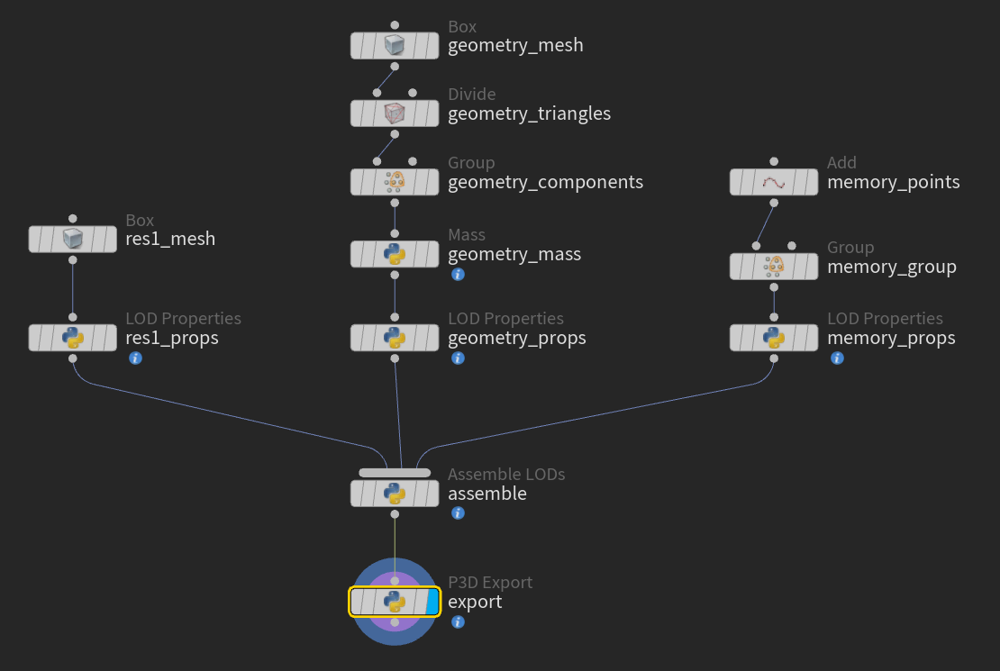
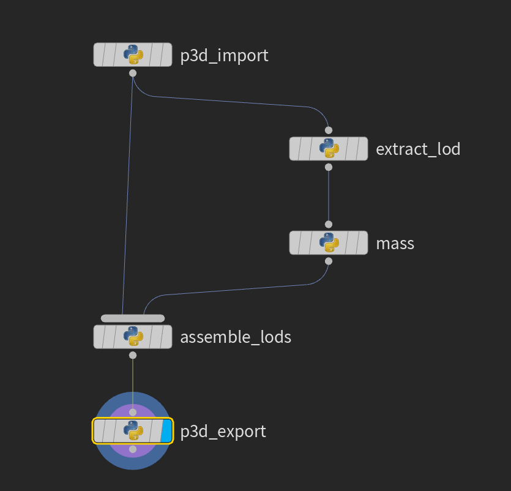

Quick start: Arma modders
You know Arma models and Object Builder. You have not used Houdini before.
This page takes you through two jobs. In job 1 you make a new model and write it as a .p3d file. In job 2 you take an existing .p3d file, change one LOD (one version of the model, for example the collision geometry), and write it again. Install the add-on first: see Install.
Steps that need the Houdini window (shelf buttons and dialogs) are marked Houdini window. Steps that happen in other programs are marked Outside Houdini. Every other step was run in Houdini without a window and gave the messages quoted here. Your numbers can differ if your model differs.
Houdini in ten minutes
You only need a handful of ideas. Houdini has many more, and you can ignore them for now.
- Node
- A box on the screen that does one job, such as "read a .p3d file" or "set the mass". Houdini work is a set of nodes joined together instead of one long list of actions.
- Wire and network
- A wire is a line from the bottom of one node (its output) to the top of another (its input). The data flows down the wire. A set of joined nodes is a network. In a network the top nodes make data and the lower nodes change it.
- Geometry object and network editor
- The network editor is the pane where you see nodes and wires. Houdini keeps your scene as objects. A Geometry object is an object that holds one model. Double-click it to go inside. Inside, the nodes are called SOPs (surface operators): nodes that make or change points and polygons. All A3OB nodes are SOPs.
- Tab menu
- To add a node, move the pointer over the network editor and press the Tab key. A menu opens. Type a few letters of the node name and press Enter. The A3OB nodes are in a submenu called A3OB.
- Parameter pane
- The pane at the right. It shows the parameters (settings) of the selected node. This guide writes a parameter name like File. Type in the field, pick a menu entry, or press a button.
- Display flag
- The viewport shows the result of one node: the one with the display flag. It is the blue circle at the right edge of a node. Click it to see that node's result. Nodes that follow the display node are not drawn until you move the flag.
- Messages and colours
- A node with a problem it cannot work around turns red (an error). Nodes below it stop working too. A node with something to look at turns yellow (a warning), and the data keeps flowing. The A3OB nodes also write a short summary line when they are fine. Middle-click a node to read its messages.
- Help
- Select a node and click the ? (help) icon at the top right of the parameter pane, or press F1 over the node. Houdini opens the help page of that node, with a summary, the inputs and the parameters. For an A3OB node the page names the full reference page in this documentation by its path in the add-on folder.
- Bypass
- Select a node and press B to switch it off without deleting it. The data passes through it unchanged. Press B again to switch it on.
Job 1: make a new model
Here is the network you will have after step 1:

Each column is one LOD: Resolution 1 on the left, Geometry in the middle, Memory on the right. The three props
nodes at the bottom of the columns all feed assemble, which packs the LODs into one model.
export writes the file.
Step 1: build the starter network
Click New P3D on the A3OB shelf.
What you see depends on what the network editor shows:
- If it shows a network of SOPs, a dialog asks Build the starter network in that network, or in a new Geometry object. The buttons are This network, New object and Cancel.
- If you choose a new object (or the editor was not showing SOPs), a second dialog asks
Name of the new Geometry object. Type a name with letters, digits and underscores, such as
my_crate.
The status line at the bottom then says Built the starter network in followed by the path. Double-click the new object to go inside.
Without the shelf you can build the same network in the Python shell:
from a3ob_houdini import new_p3d, then new_p3d.build_starter(None, "my_crate"). This is how
this page was checked.
The starter network has three LODs. Their nodes are named like this:
| LOD | Nodes | What is in it |
|---|---|---|
| Resolution 1 (the visual model) | res1_mesh, res1_props | A Box of size 1 that sits on the ground. This is where your model goes. |
| Geometry (collision) | geometry_mesh, geometry_triangles, geometry_components, geometry_mass, geometry_props | A second box, cut into triangles by a Divide node, a point group (a Houdini selection) named component01 made by a Group node, and 100 kg of mass. |
| Memory | memory_points, memory_group, memory_props | One point made by an Add node, in a group named new_point. |
Each _props node is a LOD Properties node. It says which kind of LOD the
data is. assemble is an Assemble LODs node and export is a
P3D Export node. A sticky note in the network repeats which three nodes you replace.
Click export and read its message:
3 LODs, 3 KB if saved now. The network is already valid, so you could save it now.
Step 2: put your model in
Select res1_mesh. Change its Size to, for example, 2, 1, 4.
The export node already has the display flag, so the viewport shows all three LODs together.
To use your own model, delete the box and wire your own nodes into the input of res1_props. Use any
Houdini nodes you like. For example, res1_mesh is replaced here by my_model (a Sphere) and a
Transform node, place_on_ground:
![The starter network after res1_mesh is replaced. Left column: my_model (Sphere) into place_on_ground (Transform) into res1_props (LOD Properties). Middle column: geometry_mesh (Box) into geometry_triangles (Divide) into geometry_components (Group) into geometry_mass (Mass) into geometry_props (LOD Properties). Right column: memory_points (Add) into memory_group (Group) into memory_props (LOD Properties). The three props nodes each connect to one input of assemble (Assemble LODs), which connects to export (P3D Export).](img/replace-mesh-network.png)
Two rules come from the file format:
- Every polygon has 3 or 4 points. If a node makes bigger polygons, add a Divide node after it.
- The collision LOD is checked for triangles, so keep the
geometry_trianglesDivide node after your collision shape if you replacegeometry_mesh.
Replace memory_points in the same way: move the point to where your hard point should be. To rename its
group, see the Selection browser.
geometry_mass is a Mass node. Its
Mode is Uniform total and its
Total Mass (kg) is 100, so the whole object weighs 100 kg. Its message reads
Total 100.0 kg on 8 points. Change the value to the real mass of your object.
See the Mass reference for the other modes.
Step 3: check it with Validate
Press Tab and add a Validate node. Wire the output of assemble into it.
Validate looks for what Arma or Object Builder would complain about, and changes nothing. Its summary line:
3 LODs checked: 0 errors, 0 warnings.
To see a message, select geometry_mass and press B to bypass it. Validate now says:
Geometry: has no mass. Fine for items such as vests or scopes; physical objects need mass ...
Geometry: the points have no mass (there is no a3ob_mass) ...
Use the Mass node.The first line is a note, not a warning, because some objects have no mass. The second is a warning: the node turns yellow, and the sentence after the problem tells you the fix. Press B again to switch the node back on.
For an error, change the LOD Type of memory_props to
Geometry. Two LODs now have the same type and resolution, and Validate turns red with
Geometry: another LOD has the same type and resolution. Set the type back to
Memory.
Warnings and errors, and the checks behind them, are listed in Concepts.
Step 4: write the .p3d file
Select export. In the parameter pane set Output File
to where you want the file, for example P:/my_mod/my_crate.p3d. If the name does not end in
.p3d, the node adds it. Press Save to Disk.
The node checks the model again. If it finds an error it writes nothing and tells you: in the Houdini window a dialog starts with Nothing was written. If all is well it writes the file and the node shows Saved 3 LODs, 3 KB to followed by the file name. The save goes through a temporary file, so a failed save never damages an older file with the same name.
Cooking the node (just looking at it) never writes a file. Only the button does.
The default Preset is Lossless: the node writes exactly what is in the geometry and changes nothing. If you want Object Builder's usual clean-up (lowercase paths, sorted LODs and so on), choose Arma 3 release in Preset and press Apply. Concepts lists what each preset does.
Step 5: open it in Object Builder
Start Object Builder, choose File, then Open, and pick the file you wrote. You should see your three LODs in the LOD list. Object Builder is not part of this add-on, so this step is not checked by the tests.
Job 2: change an existing model
This job uses the network below. The two ends are the same as in job 1.
- P3D Import
- Extract LOD
- Your edits
- Assemble LODs
- P3D Export
Here is the same network as built in the crate example below:

In words: p3d_import feeds extract_lod, which feeds mass. Then
mass goes into the second input of assemble_lods, and p3d_import goes into its first
input. p3d_export comes last.
P3D Import also goes straight into the first input of
Assemble LODs. The example below uses the crate model
tests/fixtures/p3d/sample_2_crate.p3d from the add-on folder. You can use any .p3d file of your own.
Step 1: import
Inside a Geometry object (make one: go up to the scene level, press Tab and choose Geometry, then double-click it), add a P3D Import node. Set its File to the .p3d file. The node reads the file and shows 7 LODs, 0 packed proxies, 0 inline proxies (the numbers are the crate's; a proxy is a place where Arma puts another model).
The output is the P3D geometry: the whole model, with each LOD packed into one item. You cannot edit the points of a packed LOD yet. The next step opens one.
If you forget to choose a file, the node turns red and says P3D Import: no file is chosen. Pick a .p3d file in the File parameter.
Step 2: take one LOD out
Add an Extract LOD node and wire the import node into it. The LOD menu lists the LODs of the file. For the crate:
- 0: Resolution 1
- 1: Resolution 2
- 2: Shadow Volume 0
- 3: Geometry
- 4: Geometry Buoyancy
- 5: Memory
- 6: Roadway
Choose 3: Geometry. The message is Extracted LOD 3: Geometry, 16 points, 24 polygons. This is the LOD geometry: ordinary Houdini points and polygons that you can edit. It still carries what the file said about the LOD (its type, properties, selections).
If you wire something else into Extract LOD, for example a Box, it turns red with Input is not a P3D geometry (packed LODs). Connect P3D Import or Assemble LODs.
Step 3: edit it
Edit the LOD with any Houdini nodes. As an example add a Mass node after Extract LOD, set Mode to Uniform total and Total Mass (kg) to 90. The message is Total 90.0 kg on 16 points.
Edit one LOD on one branch. Do not join two extracted LODs with a Merge node: a Merge keeps the LOD information of its first input only, and Validate will warn that the LODs look merged. Assemble LODs (next) is the right way to put LODs together.
To edit a second LOD, add a second Extract LOD and edit that branch in the same way.
Step 4: put it back
Add an Assemble LODs node. Wire the P3D Import node into its first input (the base: the original model). Wire your edited branch into its second input. The Replace Matching LODs switch is on, so the edited LOD replaces the base LOD of the same type and resolution, in the same place. The other LODs pass through untouched. The message:
Base: p3d_import (7 LODs). 1 replaced, 6 passed through, 0 added.
Step 5: write it
Add a P3D Export node after Assemble LODs. Set the Output File and press Save to Disk. The node reports Saved 7 LODs, 50 KB to and the file name.
The crate's Roadway LOD has polygons without a sound texture, so the node also shows a yellow warning that contains has no sound texture. A warning does not stop the save. The crate is written as it was read.
Open the file in Object Builder as in job 1.
A quick check of the whole path: connect P3D Import straight into P3D Export, with no edit, and save. With the Lossless preset the new file is identical, byte for byte, to the one you read. This holds for the two sample files in the add-on folder. Concepts says when it can differ.
Where next
- ConceptsHow a model is kept in Houdini, presets, and the checks.
- ReferenceEvery node and shelf tool, with all parameters.
- Quick ExportWrite a .p3d without a P3D Export node.
- Project root and presetsSet your P drive path and save your own presets.